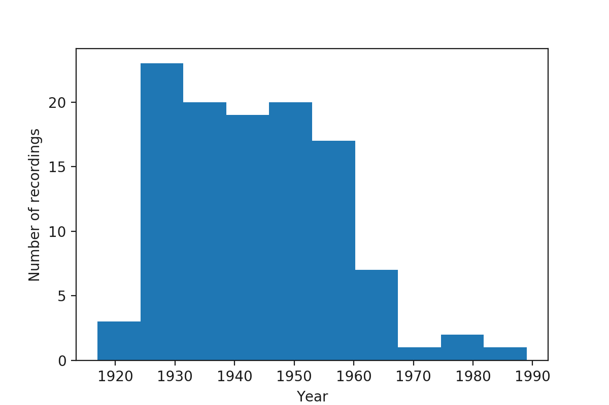

Welcome to Jazz Audio-Aligned Harmony (JAAH) dataset documentation!¶
Dataset statistics¶
| Contains | 113 tracks |
| Time period | 1917 - 1989 |
| Number of Chord Segments | 17600 |
| Mean BPM | 164.520438046 |
| Mean Harmonic Rhythm | 3.66505681818 |
| Chord | Beats Number | Beats % | Duration (seconds) | Duration % |
|---|---|---|---|---|
| hdim7 | 1280 | 1.86673278012 | 511.15 | 2.04403889773 |
| maj | 18590 | 27.1113768613 | 6605.794 | 26.415924653 |
| dom | 29786 | 43.4394551474 | 10563.263 | 42.2414564393 |
| dim | 1677 | 2.44571161895 | 582.86 | 2.33080017985 |
| min | 13172 | 19.2098470154 | 4680.954 | 18.7186775985 |
Histogram by year¶


Contents¶
- “Airegin” Tito Puente/1989
- “All Alone” Sarah Vaughan/None
- “Bags’ Groove” Thelonious Monk/None
- “Big Butter and Egg Man From the West” Louis Armstrong and His Hot Seven/None
- “Bikini” Dexter Gordon Quartet/1947
- “Black and Tan Fantasy” Duke Ellington and His Orchestra/1927
- “Black Bottom Stomp” Jelly Roll Morton’s Red Hot Peppers/1926
- “Black Water Blues” Bessie Smith and James P. Johnson/1927
- “Blue 7” Sonny Rollins/None
- “Blue Horizon” Sidney Bechet’s Blue Note Jazzmen/None
- “Blue Serge” Duke Ellington and His Famous Orchestra/1941
- “Blues for Alice” Charlie Parker/None
- “Blues in the Closet” Stan Getz and J.J. Johnson/1957
- “Body and Soul” The Benny Goodman Trio/None
- “Body and Soul” Coleman Hawkins and His Orchestra/1939
- “Boplicity” Miles Davis Nonet/1949
- “Breakfast Feud (composite) (feat. Charlie Christian)” The Benny Goodman Sextet/None
- “Concerto for Cootie” Duke Ellington and His Famous Orchestra/1940
- “Cotton Tail” Duke Ellington and His Famous Orchestra/1940
- “Cotton Tail” Ella Fitzgerald with the Duke Ellington Orchestra/1965
- “Crazeology (take 4)” Charlie Parker Sextet/1947
- “Daahoud” The Clifford Brown–Max Roach Quintet/1954
- “Dead Man Blues” Jelly Roll Morton’s Red Hot Peppers/None
- “Dexter Rides Again” Dexter Gordon/1946
- “Diminuendo in Blue and Crescendo in Blue” Duke Ellington and His Famous Orchestra/1937
- “Dinah” Django Reinhardt/1934
- “Dinah” Fats Waller and His Rhythm/1935
- “Dinah” Red Nichols & His Five Pennies/None
- “Dippermouth Blues” King Oliver’s Creole Jazz Band/1923
- “Django” The Modern Jazz Quartet/1954
- “Doggin’ Around” Count Basie & His Orchestra/None
- “East St. Louis Toodle-Oo” Duke Ellington and His Orchestra/1927
- “Embraceable You” Charlie Parker Quintet/1947
- “Everybody Loves My Baby” The Boswell Sisters/1932
- “Evidence” Thelonious Monk/None
- “For Dancers Only” Jimmie Lunceford and His Orchestra/1937
- “Four Brothers” Woody Herman and His Orchestra/1947
- “Four or Five Times” Jimmie Noone’s Apex Club Orchestra/None
- “From Monday On” Bix Beiderbecke & Paul Whiteman and His Orchestra/1928
- “Giant Steps” John Coltrane/1959
- “The Girl From Ipanema” Stan Getz & João Gilberto feat. Antonio Carlos Jobim/1963
- “Grandpa’s Spells” Jelly Roll Morton’s Red Hot Peppers/None
- “Haig & Haig” Clark Terry-Bob Brookmeyer Quintet/1966
- “A Handful of Riffs” Eddie Lang & Lonnie Johnson/1929
- “Harlem Congo” Chick Webb and His Orchestra/1937
- “He’s Funny That Way” Billie Holiday/None
- “Honeysuckle Rose” Benny Goodman and His Orchestra/1939
- “Honky Tonk Train Blues” Meade “Lux” Lewis/1936
- “Hotter Than That” Louis Armstrong and His Hot Five/None
- “I Can’t Believe That You’re in Love With Me” The Chocolate Dandies/1940
- “I Can’t Get Started” Dizzy Gillespie Sextet/1945
- “I Found a New Baby (feat. Charlie Christian & Count Basie)” The Benny Goodman Sextet/None
- “I Got Rhythm” Don Byas and Slam Stewart/1945
- “I Gotta Right to Sing the Blues” Louis Armstrong & His Orchestra/None
- “In a Mellotone” Duke Ellington and His Famous Orchestra/1940
- “In Gloryland” Bunk’s Brass Band/1945
- “Indiana” Bud Powell/1947
- “Isfahan” Duke Ellington and His Orchestra/1966
- “King Porter Stomp” Jelly Roll Morton/None
- “Ko-Ko” Duke Ellington and His Famous Orchestra/1940
- “Lady Bird” Tadd Dameron Sextet/1948
- “Lester Leaps In” Count Basie and the Kansas City 7/None
- “Livery Stable Blues” Original Dixieland Jazz Band/1917
- “Lost Your Head Blues” Bessie Smith/None
- “Manteca” Dizzy Gillespie and His Orchestra/1947
- “Maple Leaf Rag” New Orleans Feetwarmers/1932
- “Maple Leaf Rag” Anthony Braxton and Muhal Richard Abrams/1976
- “Maple Leaf Rag” Dick Hyman/1975
- “Mean to Me” Billie Holiday with Teddy Wilson and His Orchestra/1937
- “Minor Swing” Quintette du Hot Club de France/1937
- “Misterioso” Thelonious Monk Quartet/1948
- “Moanin’” Art Blakey & The Jazz Messengers/1958
- “Moten Swing” Bennie Moten and his Kansas City Orchestra/1932
- “My Favorite Things, Part 1 (Single Version)” John Coltrane Quartet/1960
- “The New East St. Louis Toodle-Oo” Duke Ellington and His Famous Orchestra/1937
- “Night in Tunisia” Bud Powell Trio/1951
- “Oh, Lady Be Good” Charlie Parker with Jazz at the Philharmonic/1946
- “One by One” Art Blakey & The Jazz Messengers/1963
- “One O’Clock Jump” Count Basie and His Orchestra/1937
- “Organ Grinder’s Swing” Jimmie Lunceford and His Orchestra/None
- “Parker’s Mood” Charlie Parker All Stars/1948
- “Pent-Up House” Sonny Rollins/1956
- “Potato Head Blues” Louis Armstrong and His Hot Five/None
- “Riverboat Shuffle” Frankie Trumbauer and His Orchestra/None
- “Rockin’ Chair” Gene Krupa and His Orchestra/None
- “September in the Rain” The George Shearing Quintet/1949
- “Shaw ‘Nuff” Dizzy Gillespie All Star Quintet/1945
- “Singin’ the Blues (Til My Daddy Comes Home)” Frankie Trumbauer and His Orchestra/1927
- “St. Louis Blues” Bessie Smith featuring Louis Armstrong/None
- “St. Thomas” Sonny Rollins/1956
- “Stompin’ at the Savoy” Louis Armstrong & Ella Fitzgerald/1957
- “Struttin’ With Some Barbecue” Louis Armstrong and His Hot Five/None
- “Subconscious Lee” Lennie Tristano/None
- “Summertime” Miles Davis: orchestra under the direction of Gil Evans/1958
- “Sweethearts on Parade” Louis Armstrong & His Orchestra/None
- “Swing That Music” Louis Armstrong and His Orchestra/1936
- “That’s a Serious Thing” Eddie Condon’s Hot Shots/1929
- “The Golden Bullet” Count Basie Octet/1950
- “The Man I Love” Coleman Hawkins Quartet/None
- “The Preacher” Horace Silver and The Jazz Messengers/1955
- “The Stampede” Fletcher Henderson and His Orchestra/1926
- “These Foolish Things” Billie Holiday/None
- “Tricroism” Lucky Thompson Trio/1956
- “Walkin’ Shoes” The Gerry Mulligan Quartet with Chet Baker/1952
- “Watermelon Man” Herbie Hancock/1973
- “Weather Bird” Louis Armstrong and Earl Hines/1928
- “West Coast Blues (abridged)” Wes Montgomery/None
- “West End Blues” Louis Armstrong and His Hot Five/1928
- “When Lights Are Low” Lionel Hampton and His Orchestra/None
- “Work Song” Cannonball Adderley/1960
- “Wrap Your Troubles in Dreams” Sarah Vaughan/1960
- “Wrappin’ It Up” Fletcher Henderson and His Orchestra/None
- “You’d Be So Nice to Come Home To” Ella Fitzgerald/None
Glossary¶
- Bigram
Bigram represents chords transition event. “Absolute” chord pitches are omitted, bigram is denoted by:
first chord quality (i.e. Maj, Min, Dom, HDim7, Dim)
interval between first and second chord roots encoded by:
- Letter: Pure, Major or minor
- number (2 for second, 3 for third, etc)
second chord quality
The approach is taken from [BS13].
- N-gram
- Represent sequence of chord transition events. “Absolute” chord pitches are omitted, only chord qualities and inter-root intervals are considered (see Bigram).
- Chord type chroma distribution ternary plot
Lead sheet chord chart is the backbone of performance in many jazz styles. But each performance and style has it’s own “sonic aura” determined by how conceived chords are realized by musicians. The main idea of these plots is to provide visual profiles for each of main chord types used in jazz (major, minor, dominant seventh, halfdiminished seventh and diminished) for the whole dataset and for each track. Chroma distribution plots show:
- What degrees (relative to a chord’s root) are actually presented, and quantitative measurement of their presence.
- Joint distribution of the degrees (it shows e.g. how often certain degrees are played together or are they used independently)
- Dispersion of degree usage
How are they produced?
- NNLS Chroma features (http://www.isophonics.net/nnls-chroma , [MD10]) are extracted for each frame of audio recordings. Each chroma is a 12-dimensional vector, with components representing 12 semitone pitch classes.
- Pitch-class based chroma converted to degree-based chroma. I.e. chroma vectors corresponding to each particular chord are transposed to the common root, so the new vector’s first component represents intensity of chord root pitch, the following - intensity of minor second, etc.
- For each beat, “beat predominant chroma” is calculated. This is a single 12d vector which represents predominant chroma around this beat. To estimate it, we convolve per-frame chroma vectors with Hanning window (https://en.wikipedia.org/wiki/Hann_function) and then use vectors corresponding to beat frames. Thus, maximum weights are given to frames, close to the beat and weights are decreased as frames are moving away from the beat.
- We rather interested in proportion of chroma components in a certain sound segment, but not in it’s absolute values, so we normalize them with \(l1\) norm. So they are sum up to one (and they are non-negative by definition).
- Normalized chroma vectors don’t fill the whole 12D space. They are distributed on standard 11-simplex (https://en.wikipedia.org/wiki/Simplex): \(\{x\in \mathbb {R} ^{12}:x_{0}+\dots +x_{11}=1,x_{i}\geq 0,i=0,\dots ,11\}\). To visualize it’s distribution we borrow techniques from Compositional Data Analysis (e.g. [vdBTD13]). Such techniques are used when proportions of parts is explored (e.g. chemical composition or budget composition). Our 11-d simplex has 12 vertices corresponding to 12 semitones addressed as chord degrees. It’s confined by 220 triangle faces (each face corresponds to unique triple combination of the degrees, e.g. I-III-V). To see what’s inside, we produce two dimensional projections of the simplex content to it’s faces, representing density with color. For each triple we marginalize out chroma components which are not inculded in the triple and obtain distribution of 3 chord degrees which is defined on a triangle. Resulted figure is called Ternary plot (https://en.wikipedia.org/wiki/Ternary_plot). Out of 220 triangles, we show only six, related to the most “significant” chord degrees. (“Significance” here means that chroma components for these degrees have highest average values throughout the whole dataset), triangles are arranged into hexagons adjoined by identical edges for presentation simplicity.
- Mean harmonic rhythm
- Rate (in chords per beat) at which chords are changed. See e.g.: https://en.wikipedia.org/wiki/Harmonic_rhythm
References¶
| [BS13] | Yuri Broze and Daniel Shanahan. Diachronic Changes in Jazz Harmony: A Cognitive Perspective. Music Perception: An Interdisciplinary Journal, 3(1):32–45, 2013. URL: http://www.jstor.org/stable/10.1525/mp.2013.31.1.32 http://www.jstor.org/page/info/about/policies/terms.jsp, doi:10.1525/mp.2013.31.1.32. |
| [MD10] | Matthias Mauch and Simon Dixon. Approximate note transcription for the improved identification of difficult chords. In Proceedings of the International Conference on Music Information Retrieval (ISMIR), number 1, 135–140. 2010. URL: https://www.eecs.qmul.ac.uk/~simond/pub/2010/Mauch-Dixon-ISMIR-2010.pdf. |
| [vdBTD13] | K. Gerald van den Boogaart and Raimon Tolosana-Delgado. Fundamental Concepts of Compositional Data Analysis. In Analyzing Compositional Data with R, pages 13–50. Springer Berlin Heidelberg, Berlin, Heidelberg, 2013. URL: http://link.springer.com/10.1007/978-3-642-36809-7_2, doi:10.1007/978-3-642-36809-7_2. |